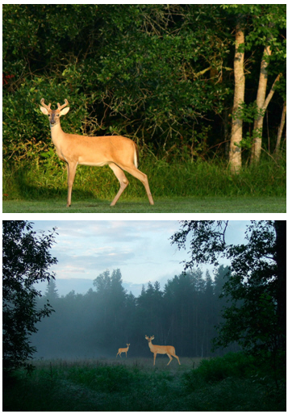
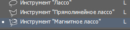
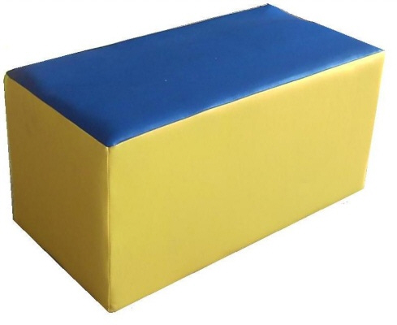
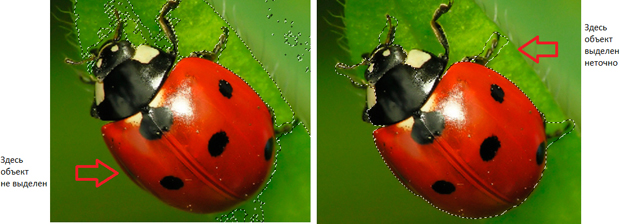
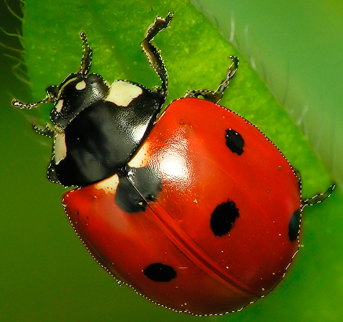
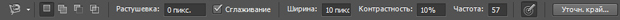
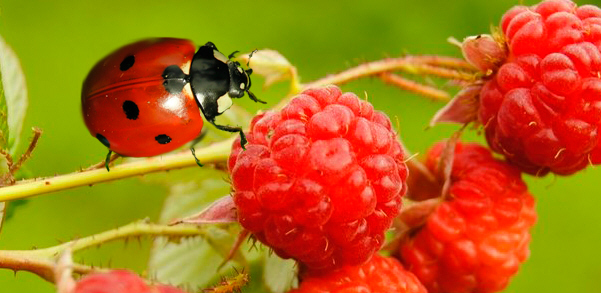
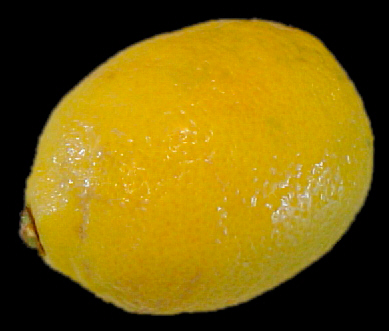
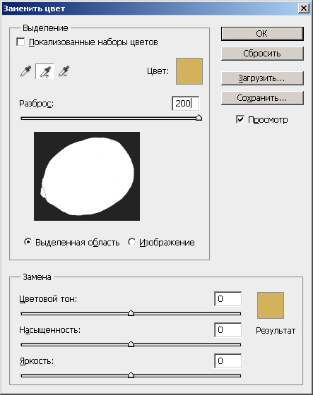
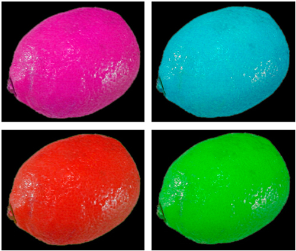

Лекция 6: Группа инструментов Лассо
На этом занятии познакомимся со сложным фотомонтажом. Он отличается от простого тем, что фон, на котором расположен объект, неоднороден и применить Волшебную палочку для вырезания объекта из фона одним щелчком мыши в этом случае невозможно. На рис. 6.1 Показан пример такого монтажа с использованием инструмента Лассо.
Рис. 6.1. Пример фотомонтажа с использованием инструмента Лассо
Волшебная палочка здесь совершенно не годится потому, что фон неоднородный и она либо будет выделять лишние объекты, либо не будет выделять нужные. Быстрое выделение также мало подходит, так как объект выделения довольно сложный как по цвету, так и по контуру. Поэтому лучший вариант для создания подобных коллажей - Лассо (L). Инструмент существует в трех разновидностях ( рис. 6.2).
Рис. 6.2. Три вида инструментов группы Лассо
Выделение инструментом Лассо производится в ручном режиме и для контуров простой формы.
Прямолинейное лассо используется при создании выделенных областей с прямыми краями.
При использовании инструмента Магнитное лассо граница выделения привязывается к краям выделяемой области изображения, это инструмент полуавтоматический. Область применения данного инструмента - объекты со сложными и контрастными краями.
Примечание
На рис. 6.3 приведен объект идеальный для выделения инструментом Прямолинейное лассо. Однако это не значит, что подобный объект нельзя вырезать из фона инструментами Лассо или Магнитное лассо. Понимание того, когда стоит брать для работы тот или иной инструмент приходит с практическим опытом работы в Photoshop.
Рис. 6.3. Графический объект прямыми краями
Из трех разновидностей Лассо вариант Магнитное лассо, пожалуй, больше всего понравится начинающему пользователю Photoshop. Рассмотрим работу этим инструментом на примере. Исходный объект сложной формы на неоднородном фоне показан на рис. 6.4.
Рис. 6.4. Оригинальное изображение
Давайте выделим его Волшебной палочкой и Быстрым выделением ( рис. 6.5).
Рис. 6.5. Выделение объекта Волшебной палочкой и Быстрым выделением
Теперь выделим божью коровку инструментом Магнитное лассо ( рис. 6.6). Результат получился вполне удовлетворительным.
Рис. 6.6. Объект выделен инструментом Магнитное лассо
Если у вас не получается - попробуйте настроить работу инструмента Магнитное лассо на Панели свойств этого инструмента ( рис. 6.7).
Рис. 6.7. Панель свойств инструмента Магнитное лассо
На рисунке имеются следующие основные настройки:
Ширина (ширина выделения). Инструмент Магнитное лассо находит границу выделения только в пределах этой величины, заданной в пикселях.
Контрастность определяет чувствительность магнитного лассо к краям изображения в значениях от 1 до 100 %. При более высоком значении края четко выделяются на фоне окружения, при низком значении мы имеем более размытые края выделения.
Частота показывает, как часто магнитное лассо будет устанавливать точки привязки: при более высоком значении точки привязки границы выделенной области будут устанавливаться чаще.
Параметр Нажим пера актуален при работе с графическим планшетом. Если этот параметр выбран, то при уменьшении нажима пера уменьшается ширина края выделения.
Пример фотомонтажа посредством Магнитное лассо приведен на рис. 6.8.
Рис. 6.8. Объект (божья коровка) вставлен на новый фон
В заключение этого примера отметим, что: 1. мы рассмотрели не все инструменты выделения, их гораздо больше; 2. различные инструменты выделения применяются в Photoshop не только для создания коллажей, но и во многих других случаях (ретушь, замена цвета и прочее). Давайте рассмотрим сказанное на примере.
Замена цветов в изображении
Команда Заменить цвет создает временную маску (выделение) вокруг заданных цветов, а затем заменяет их другими цветами. Вы можете заменить как цвет объекта, так и цвет фона. Давайте посмотрим действие этой команды на примере. Откройте графический файл - рис. 6.9.
Рис. 6.9. Исходное изображение для замены цвета
Выберите команду Изображение-Коррекция-Заменить цвет. В возникшем в результате выполнения команды окне установите переключатель Выделенная область, чтобы видеть в окне предварительного просмотра маску выделения. Установите флажок Просмотр, чтобы видеть, как настройка цвета будет отражаться на изображении. Мы будем менять не цвет фона, а цвет лимона, поэтому инструментом Пипетка+ щелкните на лимоне несколько раз в различных его местах, чтобы выделить этот объект максимально (выделенные части лимона станут белыми) - рис. 6.10.
Рис. 6.10. Окно заменить цвет в режиме замены цвета объекта
Если выделить весь лимон не удастся, то увеличьте значение ползунка Разброс.
Меняя положение ползунков Цветовой тон, Насыщенность и Яркость вы можете изменить цвет лимона в широком диапазоне цветов - рис. 6.11.
Рис. 6.11. Несколько вариантов замены цвета лимона
Примечание
Фон для объекта может быть как однородным, так и неоднородным.